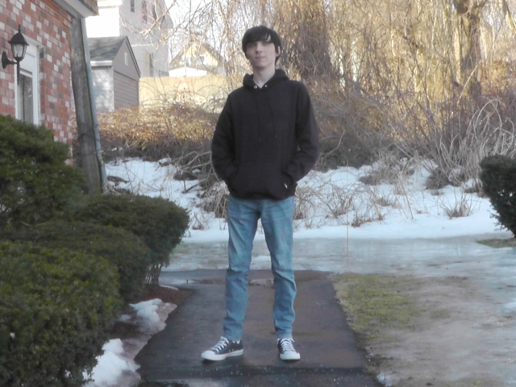

First Blog!!
Written 17 February, 2022
Hello, everyone, and welcome to Cerracrossing! I'm Cerra Matthews and today I guess I'll be writing my first ever blog post!
So it's been awhile since I last updated the site; I've been both busy editing and a bit demotivated to make new updates. Recently, though, I've gotten the urge to return - so I guess I will for now!
Recently I've dyed my hair black and also bought some new clothes; you've seen my official Cerracrossing shirt in videos already, but I've also bought some black hoodies and some new black and white Converse! ...I've basically gone full emo xD

I've also gotten a new camera, it's from 2011 but it records really clearly in 1080p 60fps (which I'll never use XD)! It actually looks better than my phone camera honestly!
Lastly in the physical, I've started using Vaseline as a moisturizer for my face and I really like how it's been looking so far! Please ignore the dark circles under my eyes, I've lost a LOT of sleep while editing ^^;

It's been really cold here lately but today and tomorrow are actually supposed to be really warm, which I'm thankful for!
I mentioned editing earlier; if you're reading this and don't know, I actually edit for the Youtuber TheMysteriousMrEnter; I recently finished editing his review of the Cartoon Network show Out of Jimmy's Head! I'm really proud of my work, you should check it out if you can!
My sleep is always thrown way off from editing, but luckily I think I'm starting to get back on-schedule. ^^
I hope you've been liking the recent updates to the site if you're one of the like 4 people who actually check on it once in awhile; feel free to e-mail me any feedback at cerra.matthews@gmail.com!
Anyway, that's about it! Thanks for reading, I'll try to post more blogs and other content soon XD
Cerra Matthews, signing off! B'bye!